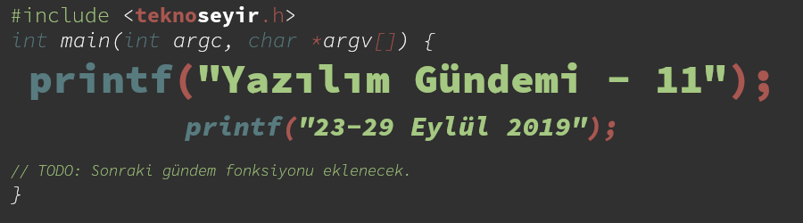

Yazılım Gündemi - 11
23-29 Eylül 2019
İçindekiler

< Önceki Gündem | 23-29 Eylül 2019 | Sonraki Gündem >
1 GitHub, CodeSearchNet projesini duyurdu
Veri, çağımızın en değerli şeyi haline gelirken GitHub'da elindeki kod veritabanını değerlendirmeye çalışıyor. Bu çalışmalar doğrultusunda da semantik şekilde kod araması yapabileceğimiz bir sistem üzerine geliştirmeler yapıyorlarmış. CodeSearchNet ismini verdikleri bu projede henüz kullanılabilir arayüzü olan bir arama motoru çıkmasa da, deneyimlerini aktarmak için CodeSearchNet projesinde kullanılan verileri ve geliştirdikleri sistemi test etmek için yarattıkları benchmark yönteminig tanıttılar. Böylece konuyla ilgilenen diğer araştırmacılar da bu verileri ve yöntemleri kullanabilecekler.
Akademik makaleye ulaşmak için buraya tıklayabilirsiniz.
2 .NET Core 3.0 duyuruldu
Microsoft'un son birkaç senedir üzerinde fazla yoğunlaştığı açık kaynaklı uygulama çatısı .NET Core 3.0 sürümü bu hafta duyuruldu. Uzun zamandır .NET tarafında geliştirme yapmıyorum fakat .NET Core uygulama çatısı, özellikle GNU/Linux sistemlerde de çalışma özelliğine sahip olduğu için ilgimi çekiyor. Bir ara inceleyeceğim. Ayrıca bu yeni sürüm birkaç aydır dot.net sitesinde ve bing arama motorunda kullanılıyormuş, oralarda test etmişler yani.
Bu sürümle gelen bazı değişiklikler ise şu şekilde:
- C# 8 ve F# 4.7 desteği,
- Hem Windows Forms olarak hem de WPF olarak Windows masaüstü uygulaması geliştirebilme,
- .NET Core uygulamaları artık varsayılan olarak çalıştırabilir (executable)
formatta olacak. Yani artık uygulama çalıştırmak için
dotnet myapp.dllyazmak yerine direkt./myappyazarak çalıştırılabilecekler. - Yüksek performanslı JSON API sistemi eklenmiş.
- Çöp toplayıcı (Garbage Collector) artık daha az bellek kullanıyor.
Visual Studio kullanıcıları bu sürümü kullanmak için Visual Studio 2019 16.3 sürümünü kullanmak zorundalar. Diğer özellikler için mutlaka konu başlığına eklediğim bağlantıya tıklayınız.
3 Yaklaşan Etkinlikler
| Etkinlik İsmi | Yer | Tarihi |
|---|---|---|
| BASH: Lingua Non Grata | İstanbul | 2 Ekim 19:00 |
| Ruby Türkiye Buluşması #5 | İstanbul | 5 Ekim 13:00 |
| Typed Properties ve dahası ile PHP 7.4 | İstanbul | 5 Ekim 13:30 |
| Gnu/Linux Talks #2 - Özgür Yazılım | Ankara | 5 Ekim 17:00 |
4 Diğer Haberler
- Cloudflare, HTTP/3 standardının dünü, bugünü ve yarını ile ilgili yazı yayınlandı.
- Amazon Web Services, .NET Foundation'a katıldı.
- Telegram, blok zincir geliştiricilerine yarışmayla 400.000$ verecek.
- Gremlin firması, sunucu çökmesi gibi çeşitli senaryoları test etmeye imkan sağlayan yeni bir hizmet duyurdu: Scenarios.
- Apple, bağımsız bir geliştiricinin uygulamasını nedensiz şekilde kaldırmaya çalışıyor.
- Richard Stallman, GNU Projesine liderlik etmeye devam ettiğini duyurdu.
- Oracle, ADBA (Asynchronous Database Access) özelliği üzerinde çalışmayı durdurdu.
- OpenJDK, Solaris desteğini sonlandırıyor.
- Rust programlama dili 1.38.0 sürümü duyuruldu.
- Nim programlama dili ilk stabil sürümü 1.0 duyuruldu.
- Crystal programlama dili 0.31.0 sürümü yayınlandı.
- PostgreSQL 12 RC1 sürümü yayınlandı.
- C/C++ için paket yöneticisi olan Conan, 'Package ID' özelliğini duyurdu.
- GNU Nazik İletişim Kılavuzu (Kind Communication Guidelines) yayınlandı.
- React 16.10.0 sürümü duyuruldu.
- PHP projeler için sertifika yönetim kütüphanesi Certainty, 2.5.0 sürümünü yayınlandı.
- Rust dili için web framework sistemi yew, 0.9.0 sürümü yayınlandı.
- Mesa 3D kütüphanesinin 19.2.0 sürümü yayınlandı.
5 Lisans

Yazılım Gündemi - 11 yazısı Eren Hatırnaz tarafından Creative Commons Atıf-GayriTicari-AynıLisanslaPaylaş 4.0 Uluslararası Lisansı (CC BY-NC-SA 4.0) ile lisanslanmıştır.